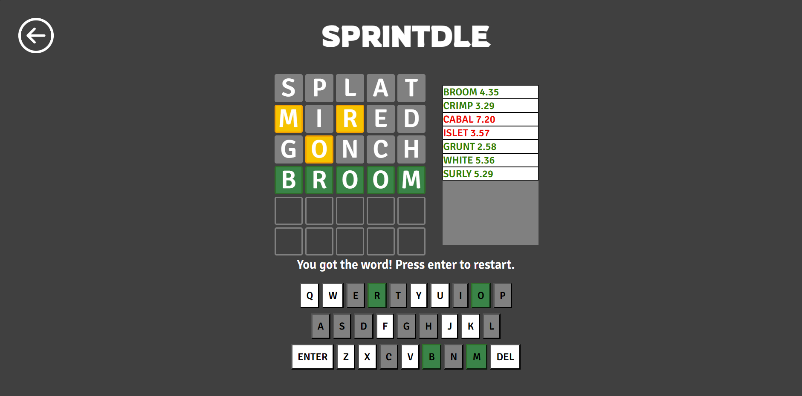
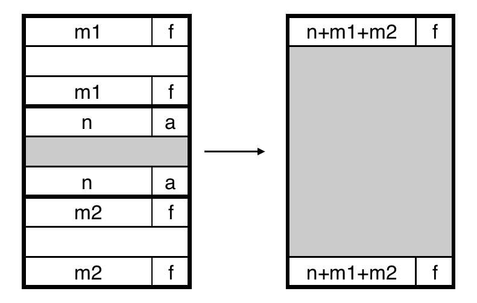

Personal Projects

- Built a website application inspired by Wordle using HTML/CSS and
Javascript
- Implemented multiple diverse game modes such as Classic, Frenzy, and
Survival
- Designed a how-to-play section and a statistics section based off local
storage
- Created a social media application that quizzes users about images from
entertainment media
- Used Python to request from multiple database APIs and schedule
coroutines concurrently
School Projects
Malloc Lab

- Implemented a dynamic memory allocator for C programs via segregated
free lists
- Achieved 74% utilization and 7k+ throughput
Cold Gravitational Collapse Simulation

- Simulated three-dimensional N-body system using particle-mesh (PM)
method
- Evolved gravitational collapse and explored resolution limitations of PM
code
- Utilized Python packages such as numpy, matplotlib, and scipy